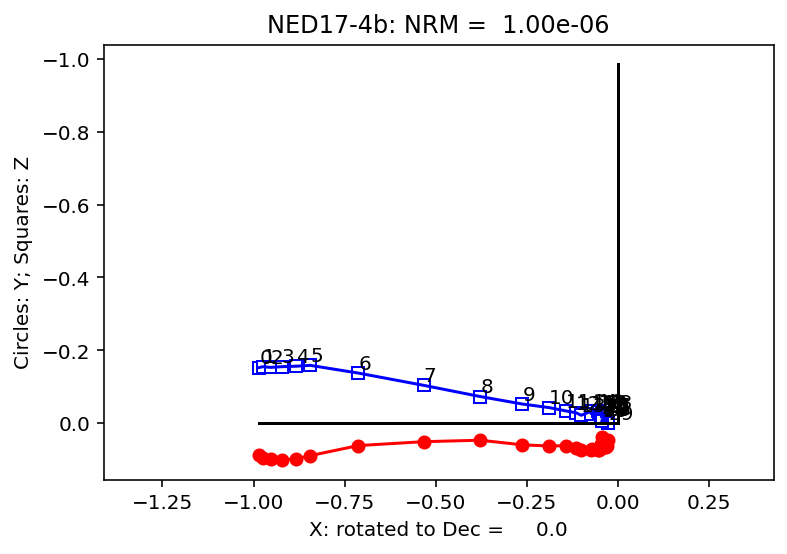
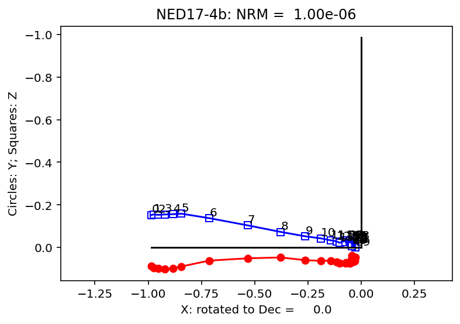

Inspecting directional data in a MagIC contribution using PmagPy#
This template notebook enables inspection of the data within a MagIC contribution. We want to get the data from MagIC, import the data into our notebook, and inspect the data by making plots.
Import functions from PmagPy#
To start with, let’s import some functions from PmagPy:
import pmagpy.ipmag as ipmag
%matplotlib inline
%config InlineBackend.figure_format='retina'
Import the data#
We can use ipmag to go download the data from MagIC for us. We can do this in a couple of ways. One way is to use the doi and the function ipmag.download_magic_from_doi(). The other is to use the MagIC contribution ID number with the ipmag.download_magic_from_id() function. Let’s take that approach for the study:
Nicholas L. Swanson‐Hysell, Margaret S. Avery, Yiming Zhang, Eben B. Hodgin, Robert J. Sherwood, Francisco E. Apen, Terrence J. Boerboom, C. Brenhin Keller, John M. Cottle (2021). The paleogeography of Laurentia in its early years:new constraints from the Paleoproterozoic East‐Central Minnesota batholith. Tectonics. doi:10.1029/2021TC006751. MagIC contribution: https://earthref.org/MagIC/doi/10.1029/2021TC006751
which has a MagIC ID of 17072. This MagIC ID can be replaced with that of another study in the MagIC database.
magic_id='17072'
result, magic_file_name = ipmag.download_magic_from_id(magic_id)
Running this function will download a file called magic_contribution_17072.txt in the folder that this notebook is in.
In the above code cell, we saved a variable magic_file_name that is the name of the files that was downloaded.
magic_file_name
'magic_contribution_17072 (1).txt'
Unpacking the tables#
A MagIC contribution is a single .txt file that comprises a number of tables. In the case of this contribution, we have these tables:
contribution
locations
sites
samples
specimens
measurements
We want unpack the contribution into these distinct tables.
ipmag.download_magic(magic_file_name,print_progress=False)
1 records written to file /Users/unimos/0000_Github/PmagPy-docs/example_notebooks/template_notebooks/contribution.txt
1 records written to file /Users/unimos/0000_Github/PmagPy-docs/example_notebooks/template_notebooks/locations.txt
90 records written to file /Users/unimos/0000_Github/PmagPy-docs/example_notebooks/template_notebooks/sites.txt
312 records written to file /Users/unimos/0000_Github/PmagPy-docs/example_notebooks/template_notebooks/samples.txt
1559 records written to file /Users/unimos/0000_Github/PmagPy-docs/example_notebooks/template_notebooks/specimens.txt
12410 records written to file /Users/unimos/0000_Github/PmagPy-docs/example_notebooks/template_notebooks/measurements.txt
True
Visualizing measurement level data#
The ipmag.zeq_magic() function will plot measurement data from single specimens generating:
equal area plot
Zijderveld plot
demagnetization plot
The n_plots parameter specifies how many specimens data are generated.
ipmag.zeq_magic(save_plots=False, n_plots=1)
-I- Using online data model
-I- Getting method codes from earthref.org
-I- Importing controlled vocabularies from https://earthref.org
---------------------------------------------------------------------------
AttributeError Traceback (most recent call last)
/Users/unimos/0000_Github/PmagPy-docs/example_notebooks/template_notebooks/Inspecting_MagIC_directional_data.ipynb Cell 11 in <cell line: 1>()
----> <a href='vscode-notebook-cell:/Users/unimos/0000_Github/PmagPy-docs/example_notebooks/template_notebooks/Inspecting_MagIC_directional_data.ipynb#X53sZmlsZQ%3D%3D?line=0'>1</a> ipmag.zeq_magic(save_plots=False, n_plots=1)
File ~/0000_Github/PmagPy/pmagpy/ipmag.py:12250, in zeq_magic(meas_file, spec_file, crd, input_dir_path, angle, n_plots, save_plots, fmt, interactive, specimen, samp_file, contribution, fignum, image_records)
12248 if 'id' in contribution.tables['contribution'].df.columns:
12249 con_id = contribution.tables['contribution'].df['id'].values[0]
> 12250 pmagplotlib.add_borders(ZED, titles, con_id=con_id)
12251 for title in titles:
12252 int_str = ""
AttributeError: module 'pmagpy.pmagplotlib' has no attribute 'add_borders'
Visualizing site level data#
Plots can also be saved by setting save_plots to be True
ipmag.eqarea_magic(save_plots=True)
-W- File /Users/unimos/0000_Github/PmagPy-docs/example_notebooks/template_notebooks/criteria.txt is incomplete and will be ignored
90 sites records read in
---------------------------------------------------------------------------
AttributeError Traceback (most recent call last)
/Users/unimos/0000_Github/PmagPy-docs/example_notebooks/template_notebooks/Inspecting_MagIC_directional_data.ipynb Cell 13 in <cell line: 1>()
----> <a href='vscode-notebook-cell:/Users/unimos/0000_Github/PmagPy-docs/example_notebooks/template_notebooks/Inspecting_MagIC_directional_data.ipynb#X55sZmlsZQ%3D%3D?line=0'>1</a> ipmag.eqarea_magic(save_plots=True)
File ~/0000_Github/PmagPy/pmagpy/ipmag.py:13646, in eqarea_magic(in_file, dir_path, input_dir_path, spec_file, samp_file, site_file, loc_file, plot_by, crd, ignore_tilt, save_plots, fmt, contour, color_map, plot_ell, n_plots, interactive, contribution, source_table, image_records)
13644 if pmagplotlib.isServer:
13645 titles = {'eqarea': 'Equal Area Plot'}
> 13646 FIG = pmagplotlib.add_borders(FIG, titles, con_id=con_id)
13647 saved_figs = pmagplotlib.save_plots(FIG, files)
13648 elif save_plots:
AttributeError: module 'pmagpy.pmagplotlib' has no attribute 'add_borders'
ipmag.vgpmap_magic(flip=True,
save_plots=False,
lat_0=60)
-W- File /Users/unimos/0000_Github/PmagPy-docs/example_notebooks/template_notebooks/criteria.txt is incomplete and will be ignored
---------------------------------------------------------------------------
AttributeError Traceback (most recent call last)
/Users/unimos/0000_Github/PmagPy-docs/example_notebooks/template_notebooks/Inspecting_MagIC_directional_data.ipynb Cell 14 in <cell line: 1>()
----> <a href='vscode-notebook-cell:/Users/unimos/0000_Github/PmagPy-docs/example_notebooks/template_notebooks/Inspecting_MagIC_directional_data.ipynb#X56sZmlsZQ%3D%3D?line=0'>1</a> ipmag.vgpmap_magic(flip=True,
<a href='vscode-notebook-cell:/Users/unimos/0000_Github/PmagPy-docs/example_notebooks/template_notebooks/Inspecting_MagIC_directional_data.ipynb#X56sZmlsZQ%3D%3D?line=1'>2</a> save_plots=False,
<a href='vscode-notebook-cell:/Users/unimos/0000_Github/PmagPy-docs/example_notebooks/template_notebooks/Inspecting_MagIC_directional_data.ipynb#X56sZmlsZQ%3D%3D?line=2'>3</a> lat_0=60)
File ~/0000_Github/PmagPy/pmagpy/ipmag.py:14583, in vgpmap_magic(dir_path, results_file, crd, sym, size, rsym, rsize, fmt, res, proj, flip, anti, fancy, ell, ages, lat_0, lon_0, save_plots, interactive, contribution, image_records)
14580 Opts['details'] = {'coasts': 1, 'rivers': 0, 'states': 0,
14581 'countries': 0, 'ocean': 1, 'fancy': fancy}
14582 # make the base map with a blue triangle at the pole
> 14583 pmagplotlib.plot_map(FIG['map'], [90.], [0.], Opts)
14584 Opts['pltgrid'] = -1
14585 Opts['sym'] = sym
AttributeError: module 'pmagpy.pmagplotlib' has no attribute 'plot_map'
<Figure size 1440x1440 with 0 Axes>
Importing specific MagIC tables#
The functions above ipmag.zeq_magic, ipmag.eqarea_magic, and ipmag.vgpmap_magic are convenience functions that are able to directly read from MagIC files. For some other functions in PmagPy data need to be imported to be Python objects. There is a really nice package for dealing with tabular data in Python called pandas. The code cell below imports this package so that we can use it. We use the typical scientific Python nomenclature of importing it for use to the shorthand pd.
Import the sites table#
We can now use pandas to import the sites table to a pandas dataframe using the function pd.read_csv().
sites = pd.read_csv('sites.txt',sep='\t',header=1)
sites
We can extract specific columns from the dataframe by using the nomenclature dataframe_name['column_name']. In this case, the dataframe name is sites and the column name might be dir_dec. So sites['dir_dec'] will give us all the declinations.
sites_dec = sites['dir_dec']
sites_inc = sites['dir_inc']
Plot up data from any specimen#
import pandas as pd
# Read the files
specimens = pd.read_csv('specimens.txt', sep='\t', skiprows=1)
measurements = pd.read_csv('measurements.txt', sep='\t', skiprows=1)
# Get the unique specimen names from each DataFrame
unique_specimens = specimens['specimen'].unique()
unique_measurements = measurements['specimen'].unique()
# Find the common unique names using numpy's intersect1d method
specimen_list = pd.np.intersect1d(unique_specimens, unique_measurements)
specimen_list
array(['NED1-1b', 'NED1-2b', 'NED1-3b', 'NED1-4b', 'NED1-5b', 'NED1-6b',
'NED1-7b', 'NED1-8b', 'NED10-1b', 'NED10-2b', 'NED10-3b',
'NED10-4b', 'NED10-5b', 'NED10-6b', 'NED10-7b', 'NED10-8b',
'NED11-1b', 'NED11-2b', 'NED11-3b', 'NED11-4b', 'NED11-5b',
'NED11-6b', 'NED11-7b', 'NED11-8b', 'NED12-1b', 'NED12-2b',
'NED12-3b', 'NED12-4b', 'NED12-5b', 'NED12-6b', 'NED12-7b',
'NED12-8b', 'NED13-1b', 'NED13-2b', 'NED13-3b', 'NED13-4b',
'NED13-5b', 'NED13-6b', 'NED13-7b', 'NED13-8b', 'NED14-1b',
'NED14-2b', 'NED14-3b', 'NED14-4b', 'NED14-5b', 'NED14-6b',
'NED14-7b', 'NED14-8b', 'NED14-9b', 'NED15-1b', 'NED15-2b',
'NED15-3b', 'NED15-4b', 'NED15-5b', 'NED15-6b', 'NED15-7b',
'NED15-8b', 'NED15-9b', 'NED16-1b', 'NED16-2b', 'NED16-3b',
'NED16-4b', 'NED16-5b', 'NED16-6b', 'NED16-7b', 'NED16-8b',
'NED17-10a', 'NED17-10b', 'NED17-11a', 'NED17-11b', 'NED17-1a',
'NED17-1b', 'NED17-2a', 'NED17-2b', 'NED17-3a', 'NED17-3b',
'NED17-4a', 'NED17-4b', 'NED17-5a', 'NED17-5b', 'NED17-6a',
'NED17-6b', 'NED17-7a', 'NED17-7b', 'NED17-8a', 'NED17-8b',
'NED17-9a', 'NED17-9b', 'NED18-1b', 'NED18-2b', 'NED18-3b',
'NED18-4b', 'NED18-5b', 'NED18-6b', 'NED18-7b', 'NED18-8b',
'NED19-1b', 'NED19-2b', 'NED19-3b', 'NED19-4b', 'NED19-5b',
'NED19-6b', 'NED19-7a', 'NED19-7b', 'NED19-8a', 'NED19-8b',
'NED2-1a', 'NED2-1b', 'NED2-2a', 'NED2-2b', 'NED2-3a', 'NED2-3b',
'NED2-4a', 'NED2-4b', 'NED2-5a', 'NED2-5b', 'NED2-6a', 'NED2-6b',
'NED2-7a', 'NED2-7b', 'NED2-8a', 'NED2-8b', 'NED20-3a', 'NED20-4a',
'NED20-5a', 'NED20-6a', 'NED20-7a', 'NED20-8a', 'NED21-1a',
'NED21-2a', 'NED21-3a', 'NED21-4a', 'NED21-5a', 'NED21-6a',
'NED21-7a', 'NED21-8a', 'NED22-3a', 'NED22-4a', 'NED22-5a',
'NED22-6a', 'NED23-1a', 'NED23-2a', 'NED23-3a', 'NED23-4a',
'NED23-5a', 'NED23-6a', 'NED23-8a', 'NED24-1a', 'NED24-3a',
'NED25-1a', 'NED25-2a', 'NED25-3a', 'NED25-4a', 'NED25-5a',
'NED25-6a', 'NED25-7a', 'NED25-8a', 'NED26-1a', 'NED26-2a',
'NED26-3a', 'NED26-4a', 'NED26-5a', 'NED26-6a', 'NED26-7a',
'NED26-8a', 'NED27-1a', 'NED27-2a', 'NED27-3a', 'NED27-4a',
'NED27-5a', 'NED27-6a', 'NED27-7a', 'NED27-8a', 'NED28-1a',
'NED28-2a', 'NED28-3a', 'NED28-4a', 'NED28-5a', 'NED29-1a',
'NED29-2a', 'NED29-3a', 'NED29-4a', 'NED29-5a', 'NED29-6a',
'NED29-7a', 'NED29-8a', 'NED29-9a', 'NED3-1b', 'NED3-2b',
'NED3-3b', 'NED3-4b', 'NED3-5b', 'NED3-6b', 'NED3-7b', 'NED3-8b',
'NED30-1a', 'NED30-2a', 'NED30-3a', 'NED30-4a', 'NED30-5a',
'NED30-6a', 'NED30-7a', 'NED30-8a', 'NED30-9a', 'NED31-1a',
'NED31-2a', 'NED31-3a', 'NED31-4a', 'NED31-5a', 'NED32-1a',
'NED32-2a', 'NED32-3a', 'NED32-4a', 'NED32-5a', 'NED32-6a',
'NED32-7a', 'NED32-8a', 'NED32-9a', 'NED33-1a', 'NED33-2a',
'NED33-3a', 'NED33-4a', 'NED33-5a', 'NED33-6a', 'NED33-7a',
'NED33-8a', 'NED34-1a', 'NED34-2a', 'NED34-3a', 'NED34-4a',
'NED34-5a', 'NED34-6a', 'NED34-7a', 'NED34-8a', 'NED35-1a',
'NED35-2a', 'NED35-3a', 'NED35-4a', 'NED35-6a', 'NED35-7a',
'NED35-8a', 'NED35-9a', 'NED36-1a', 'NED36-2a', 'NED36-3a',
'NED36-4a', 'NED36-5a', 'NED36-7a', 'NED36-8a', 'NED4-1b',
'NED4-2b', 'NED4-3b', 'NED4-4b', 'NED4-5b', 'NED4-6b', 'NED4-7b',
'NED4-8b', 'NED5-1b', 'NED5-2b', 'NED5-3b', 'NED5-4b', 'NED5-5b',
'NED5-6b', 'NED5-7b', 'NED5-8b', 'NED6-1b', 'NED6-2b', 'NED6-3b',
'NED6-4b', 'NED6-5b', 'NED6-6b', 'NED6-7b', 'NED6-8b', 'NED6-9b',
'NED7-1b', 'NED7-2b', 'NED7-3b', 'NED7-4b', 'NED7-5b', 'NED7-6b',
'NED7-7b', 'NED7-8b', 'NED8-1b', 'NED8-2b', 'NED8-3b', 'NED8-4b',
'NED8-5b', 'NED8-6b', 'NED8-7b', 'NED8-8b', 'NED9-1b', 'NED9-2b',
'NED9-3b', 'NED9-4b', 'NED9-5b', 'NED9-6b', 'NED9-7b', 'NED9-8b',
'NWD1-10a', 'NWD1-10b', 'NWD1-11a', 'NWD1-11b', 'NWD1-12a',
'NWD1-12b', 'NWD1-13a', 'NWD1-14a', 'NWD1-15a', 'NWD1-16a',
'NWD1-17a', 'NWD1-18a', 'NWD1-19a', 'NWD1-1b', 'NWD1-2b',
'NWD1-3b', 'NWD1-4b', 'NWD1-5b', 'NWD1-6b', 'NWD1-7b', 'NWD1-8b',
'NWD1-9a', 'NWD1-9b', 'RFG1-10a', 'RFG1-11a', 'RFG1-12a',
'RFG1-13a', 'RFG1-1a', 'RFG1-2a', 'RFG1-3a', 'RFG1-4a', 'RFG1-5a',
'RFG1-6a', 'RFG1-7a', 'RFG1-8a', 'RFG1-9a', 'SCG1-1a', 'SCG1-2a',
'SCG1-3a'], dtype=object)
specimen_name = 'NED17-4b'
ipmag.zeq_magic(save_plots=False, specimen='NED17-4b')
---------------------------------------------------------------------------
AttributeError Traceback (most recent call last)
/Users/unimos/0000_Github/PmagPy-docs/example_notebooks/template_notebooks/Inspecting_MagIC_directional_data.ipynb Cell 25 in <cell line: 1>()
----> <a href='vscode-notebook-cell:/Users/unimos/0000_Github/PmagPy-docs/example_notebooks/template_notebooks/Inspecting_MagIC_directional_data.ipynb#Y103sZmlsZQ%3D%3D?line=0'>1</a> ipmag.zeq_magic(save_plots=False, specimen='NED17-4b')
File ~/0000_Github/PmagPy/pmagpy/ipmag.py:12250, in zeq_magic(meas_file, spec_file, crd, input_dir_path, angle, n_plots, save_plots, fmt, interactive, specimen, samp_file, contribution, fignum, image_records)
12248 if 'id' in contribution.tables['contribution'].df.columns:
12249 con_id = contribution.tables['contribution'].df['id'].values[0]
> 12250 pmagplotlib.add_borders(ZED, titles, con_id=con_id)
12251 for title in titles:
12252 int_str = ""
AttributeError: module 'pmagpy.pmagplotlib' has no attribute 'add_borders'
 

Pick a MagIC contribution to inspect yourself#
Browse through some MagIC contributions and import the data to inspect them for yourself.
You can copy code from cells above and put them in the cells below.